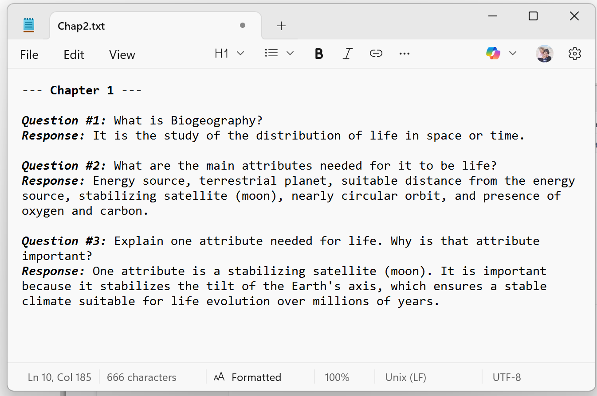

Your Roadmap in this Class
Here I explain your expected work in this course; the following page, provides extended details about how this work translates to your grade for this class.
Phase A: Submitting Weekly Q&A
This determines your grade up to a B+. Each week, by the end of Sunday, you have to submit the Q&A report of a chapter. You are welcome to submit more if you wish to work ahead. I expect that you would expend quality time in this phase, which is the reason why I gave such a high proportion of the grade to it.
I recommend using Chrome, Edge or Firefox to submit your weekly Q&A reports (avoid Safari).
One-Time Setup: Get your Google API Key and save it in the iStudy App (Instructions below).
The Workflow:
- Chapter Selection: This course has 13 chapters numbered in the Table of Contents on the left sidebar (e.g., 1:, 2:); click the current week’s chapter.
- Get Questions: On the chapter page, click the “Exam questions” link to see the specific list of questions you need to answer.
- Watch & Answer: Watch the lecture video located on that same page and collect the answers as you watch. The lecture contains all the information needed to respond to the questions.
- Submit to iStudy: Save your answers as a file (e.g., Text, or photo of your handwritten responses). Upload that file to the iStudy App (link provided in the Table of Contents on the left sidebar). The iStudy app will provide feedback and generate a revised version of your responses for your records.
Submission Rules:
- Single File Only: You can only upload one file per chapter (containing all answers for the given chapter).
- File Type: A photo of your handwriting OR a plain text file (
.txt).- If using Word/Excel: Click “Save As” and select “Plain Text (.txt)” before uploading.
- If you choose to submit handwritten responses, please ensure they are organized and legible. Clearly mark each question number, leave ample white space between responses, and keep your text in straight, orderly lines. While the application is powerful, it cannot accurately transcribe handwriting that is illegible or disorganized.
- Required Labeling: Your file must clearly state the Chapter Number and Question Numbers.

Example of the required formatting for your submissions.
🚨 Critical: Budget 60 minutes of continuous time to deliver your Q&A report. Due to privacy issues, the app does not save progress; if you stop, you must start from the beginning of that chapter.
Phase B: Submitting Exam Videos
The exam is voluntary to reach the A territory (A-, A, or A+). These videos are due any time after you finish Phase A and before the last day of class.
- The Workflow:
- Preparation: Study your Revised Response Reports from Phase A until you master the logic of each question.
- Record (One Video Per Chapter):
- Film yourself responding to all questions for that chapter. You choose which chapters to record.
- Format: Facing the camera, state the question clearly (this you can read from a paper or your computer screen), then provide the response from memory (for the response you cannot use any external help; that will be seen as cheating).
- Integrity: No notes allowed; this is an oral proof of mastery. If I suspect cheating, you may be asked to re-do the videos.
- Validation: If your responses are incorrect, it may indicate Phase A was not completed properly, and you may be asked to provide evidence of your weekly Q&A reports.
- Delivery:
(Create one video per lecture and submit which ever many for the grade that you want; see Grading section).
- Post: Post your videos to YouTube (Public or Unlisted).
- Upload: Load the URL of each chapter video exam in the IStudy app.